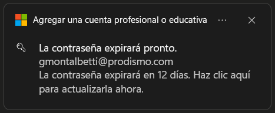
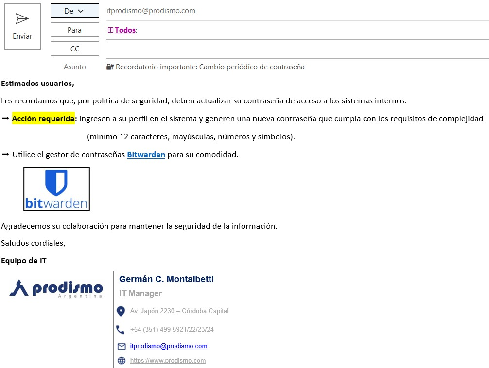
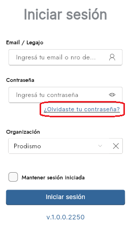
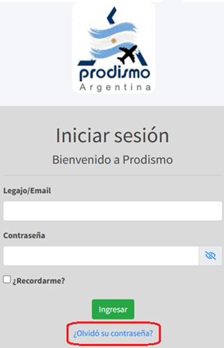
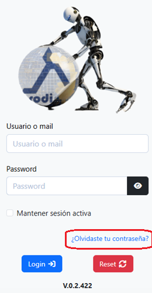
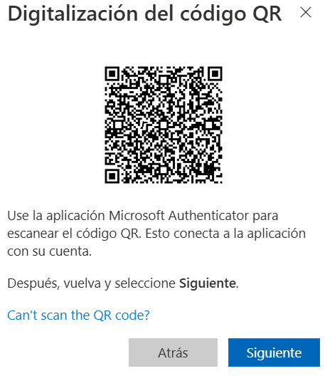
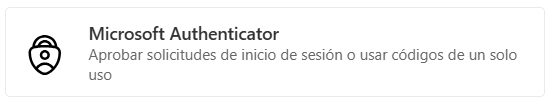
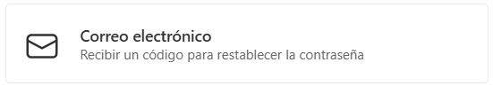
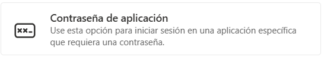

Procedimiento de Gestión de Contraseñas Seguras
1 OBJETIVO
Establecer los pasos detallados para la implementación, gestión y verificación del cumplimiento de los requisitos de contraseñas seguras definidos en la MC413-IT-4 Política de Contraseñas Seguras, garantizando la protección de los activos de información de PRODISMO SRL, y en cumplimiento de normativas de ISO/IEC 27001:2022, así como los requisitos del marco TISAX y clientes automotrices.
2 PROCEDIMIENTOS
2.1. Creación de Contraseñas Seguras
Paso 1: Verificar requisitos del sistema
- Confirmar que el sistema aplica longitud mínima de 12 caracteres
- Verificar que acepta caracteres especiales
Paso 2: Generar contraseña utilizando método aprobado
- Usar el gestor de contraseñas Bitwarden para generar contraseñas aleatorias
- O utilizar el método de frase de contraseña: "CAt1a-Prod1sm0-2025!"
- Ejemplo válido: "Power-Distant-Stonewall3-Outmost-Rebate-Chug"
Paso 3: Verificar complejidad
- Incluir mayúsculas, minúsculas, números y caracteres especiales
- No usar información personal relacionada con la empresa
2.2. Cambio Periódico de Contraseñas
Paso 1: Notificación al usuario
- Los sistemas que lo permitan, enviarán alertas días antes del vencimiento

- Se enviarán emails periódicos a los usuarios para recordarles el cambio de contraseñas

Paso 2: Proceso de cambio
- Acceder al sistema
- Seguir el asistente de cambio de contraseña
- Generar una nueva contraseña utilizando el método aprobado
- Verificar que la nueva contraseña no coincide con las 5 anteriores
Paso 3: Actualización en gestor de contraseñas
- Actualizar la entrada correspondiente en Bitwarden
- Sincronizar todos los dispositivos autorizados
2.3. Recuperación de Contraseñas
Paso 1: Acceder al portal de recuperación
- Usar el enlace "¿Olvidó su contraseña?" en la pantalla de login de cada sistema



Paso 2: Verificación de identidad
- Recibir código en aplicación Authenticator
Paso 3: Establecer nueva contraseña
- Seguir los mismos requisitos de creación de contraseñas seguras
3 REQUERIMIENTOS MÍNIMOS
3.1. Longitud y Complejidad
Usuarios estándar: Mínimo 12 caracteres
Administradores: Mínimo 16 caracteres
Debe incluir los 4 tipos de caracteres:
- Mayúsculas (A-Z)
- Minúsculas (a-z)
- Números (0-9)
- Símbolos (!@#$%^&*)
3.2. Caducidad e Histórico
- Contraseñas de usuario: 180/360 días
- Contraseñas administrativas: 90/180 días
- No reutilizar últimas 5 contraseñas
4 PROHIBICIONES
NO SE PERMITE:
- ❌ Compartir contraseñas entre colegas o familiares
- ❌ Usar "Password123!" o secuencias similares simples
- ❌ Almacenar en archivos de texto plano sin cifrar
- ❌ Enviar por WhatsApp personal o email sin cifrar
- ❌ Usar nombres de proyectos o clientes
- ❌ Reutilizar la misma contraseña en sistemas personales y corporativos
5 AUTENTICACIÓN MULTIFACTOR (MFA)
5.1. Sistemas que Requieren MFA
5.2. Configuración de MFA
Paso 1: Descargar Microsoft Authenticator
Paso 2: Escanear código QR cuando sea requerido por el sistema

Paso 3: Configurar métodos de recuperación



App Authenticator, correo electrónico, contraseña de aplicación
6 EJEMPLOS PRÁCTICOS
6.1. Ejemplos VÁLIDOS:
6.2. Ejemplos NO VÁLIDOS:
7 GESTOR DE CONTRASEÑAS
7.1. Configuración de Bitwarden
Paso 1: Gestionar cuenta gratuita de Bitwarden
Gestor de Contraseñas Bitwarden
Paso 2: Iniciar sesión con clave maestra
Paso 3: Importar contraseñas existentes (opcional)
Paso 4: Configurar autollenado seguro
I413-IT-2 Gestor de Contraseñas Bitwarden7.2. Uso Diario
- Generar nuevas contraseñas automáticamente
- Sincronizar entre dispositivos autorizados
- Compartir credenciales de equipo de forma segura
8 RECOMENDACIONES CLAVE
9 REVISIONES DEL DOCUMENTO
Este procedimiento debe revisarse anualmente o ante cambios significativos en las tecnologías de autenticación.
| Rev. N° | Fecha | Descripción |
|---|---|---|
| 0 | 25/8/2025 | Primera Emisión del documento |
| 1 | 28/1/2026 | Revisión completa del documento |